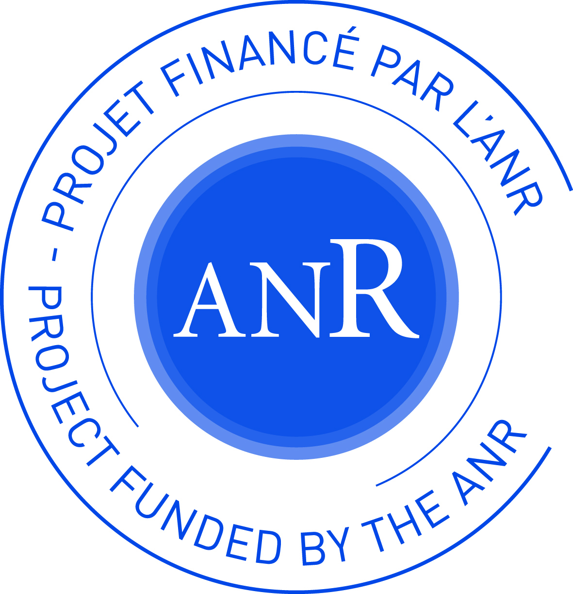
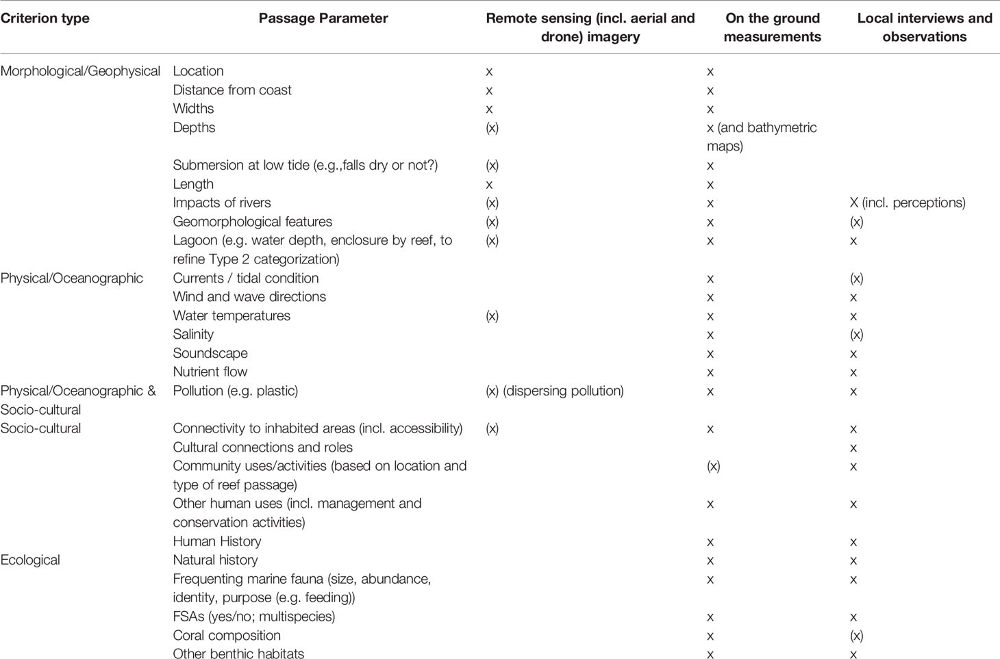

Reef passes are at the heart of the SocPacific2R project. Particularly in the South Pacific, the issues surrounding a pass are highly diverse, multiple, and complex; each pass plays a very different role in the eyes of the stakeholders and the flora and fauna it affects. To better understand these complex spaces, we attempted to identify and classify them.
This classification work focuses primarily on the archipelagos of French Polynesia, Fiji, and New Caledonia.
This exploratory work aims to establish a dialogue between stakeholders in these complex environments, as it is through discussion that we can best understand the role of each pass in the ecosystem, culture, and local economy.
Read More about SOCPacific2R See project's flyerThe goal of this project is to create a transdisciplinary dialogue around reef passages. In this initial work, we identified those located on the islands of Viti Levu, Vanua Levu, Ovalau and Moturiki (Fiji), Grande-Terre and the Loyalty Islands (New Caledonia), and Tahiti and Moorea (French Polynesia). To identify and characterize these reef passages, we relied almost entirely on information available online (remote sensing, databases, atlases, etc.). Reef passages are complex environmental features that are sometimes difficult to understand properly. Indeed, we believe that cross-examining perspectives with those involved or users of the reef passages is essential to properly describe and document them.
Through this interface, we invite you to collaborate by suggesting passages that may have escaped our remote sensing or by sharing your knowledge or experience with us on a poorly or insufficiently documented reef passage.
To do so, you will find a feedback form at the bottom of the page allowing you to express an observation or suggestion.
Note that what we define as a reef passage is a discontinuity in a coral reef that is narrower than the reef elements surrounding it.
This current version of the webmap gives access to several passage's attributes that mainly qualify its environment and morphology, such as :
We are currently working on additionnal indexes that could help to establish typology that is no exclusively relying on environmental, physical or morphological variables but also taking acount of the roles that the passage could have for local communities or ecosystems.
Source : A Typologie for reef passages (Breckwoldt et al., 2022) - DOI : https://doi.org/10.3389/fmars.2022.786125